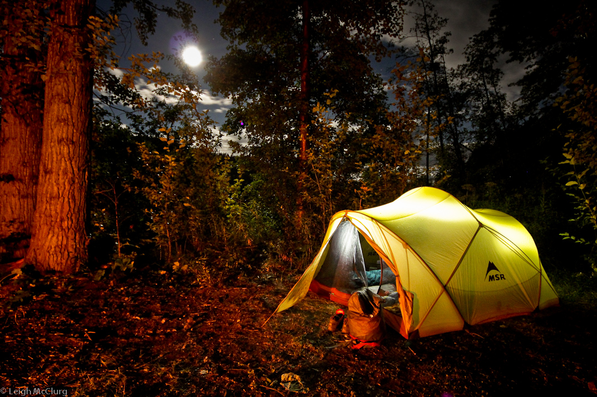

Green Camping Tips

Forget the big RVs and all those things that can negatively impact the environment. Use these green camping tips and you’ll not only have fun camping, but you’ll leave only a minimal footprint behind.
Keep your camping simple. Instead of a camper opt for a tent. Camping with a tent is better for people who want to truly experience the great outdoors since you can access areas where big motor homes can’t go.
Check the area where you will be camping. Some have restrictions on bringing outside firewood into the area. Do your research in advance, and don’t take a chance of bringing a pest or disease into an area just by bringing firewood on your trip.
Shop for camping gear that is eco-friendly. Do your part and purchase items that have been recycled. There are a number of camping supplies that fit in this category including sleeping bags which are made out of recycled goods.
You don’t need any special cooking stoves to go camping. Cooking over a campfire is truly camping at its best. Many foods can be cooked in aluminum foil, in a Dutch oven, on a grate over the fire, or in a pie iron. Do a little recipe research, and pick recipes that you can cook over a campfire.
When you go camping you will need some type of light source. The most energy efficient light sources are LED lights. Shop around and purchase LED lanterns and flashlights. If you truly want to make a difference, purchase shake or windup LED lights.
Bypass all the Styrofoam and plastic picnic supplies. Purchase reusable supplies that you can use for many years. While washing them after each meal can be a hassle, it will reduce your garbage. Opt for biodegradable soap for dish washing, and be sure to wash the dishes away from water sources. Even biodegradable soap needs the soil to break it down.
Before you leave your campground to return home, make sure you leave no trace of yourself behind. Pick up all trash and make sure it’s disposed of properly. Leave the campsite as you found it or even better than it was if you found it littered. Don’t leave smoldering coals. Make sure your campfire is completely out.